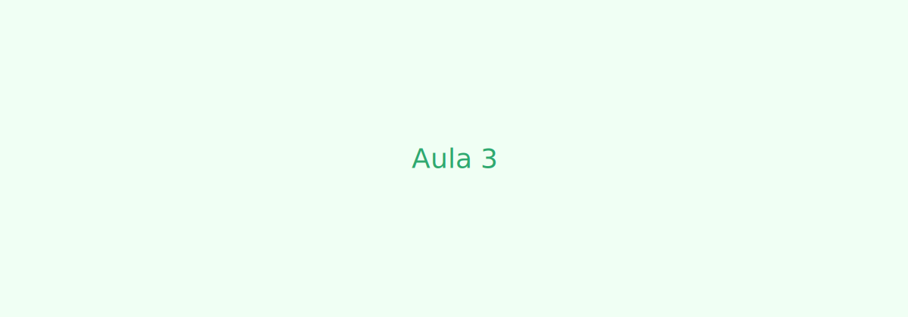

Aula 3: Privilégio, Raça e a Ancestralidade que Resiste
Essa aula me fez olhar para mim mesmo de um jeito diferente. Quando começamos a falar sobre relações étnico-raciais, percebi o quanto esse tema faz parte da minha própria história. Sou descendente de europeu, africano e indígena — uma mistura que representa bem o Brasil, mas que também carrega contradições, desigualdades e silenciamentos que vêm de séculos.
Durante muito tempo, eu não tinha noção de como essas origens influenciavam minha identidade e minha visão de mundo. Aprender sobre etnocentrismo me fez entender como, muitas vezes, a gente é ensinado a ver o mundo a partir de uma única referência, normalmente a europeia, e a considerar outras culturas como “inferiores” ou “atrasadas”. Isso não é algo natural, mas uma forma de dominação que foi sendo construída e repetida.
Pensar sobre estereótipos e preconceitos também foi importante, porque me fez enxergar como esses conceitos moldam o modo como grupos são vistos socialmente. É triste perceber como certos traços físicos, religiões ou modos de viver ainda são alvos de discriminação. Esses preconceitos acabam virando parte das estruturas sociais e influenciam oportunidades, relações e até a autoestima das pessoas.
Quando entramos no tema da interseccionalidade, tudo fez ainda mais sentido. Entender que raça, gênero, classe e outras categorias se cruzam me ajudou a perceber que as desigualdades não agem de forma isolada. Uma pessoa pode sofrer múltiplas opressões ao mesmo tempo — e reconhecer isso é o primeiro passo para transformar as relações sociais.
Essa aula me fez enxergar com mais clareza o quanto as diferenças fazem parte da nossa humanidade, e como o problema nunca foi a diversidade, mas sim a desigualdade. Hoje, entendo que valorizar as origens, respeitar as diferenças e questionar os preconceitos é uma forma de contribuir, mesmo que em pequena escala, para uma sociedade mais justa e consciente.